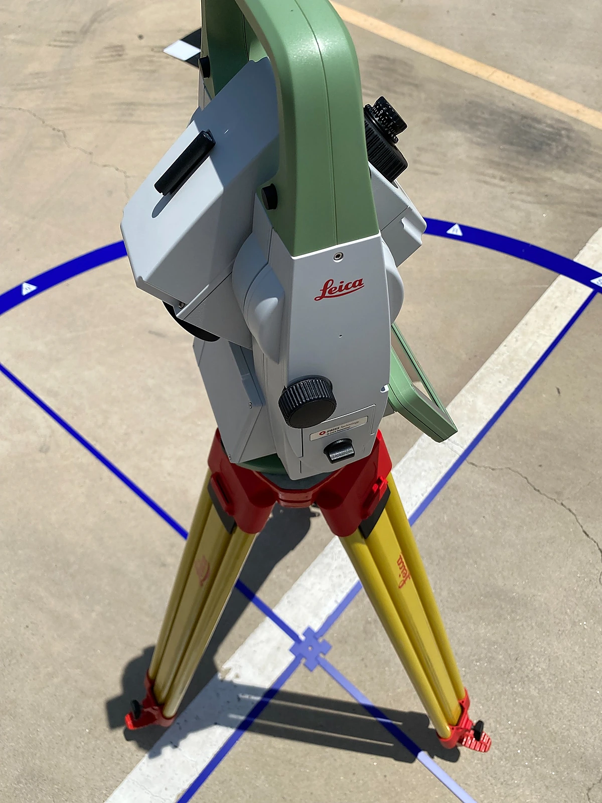
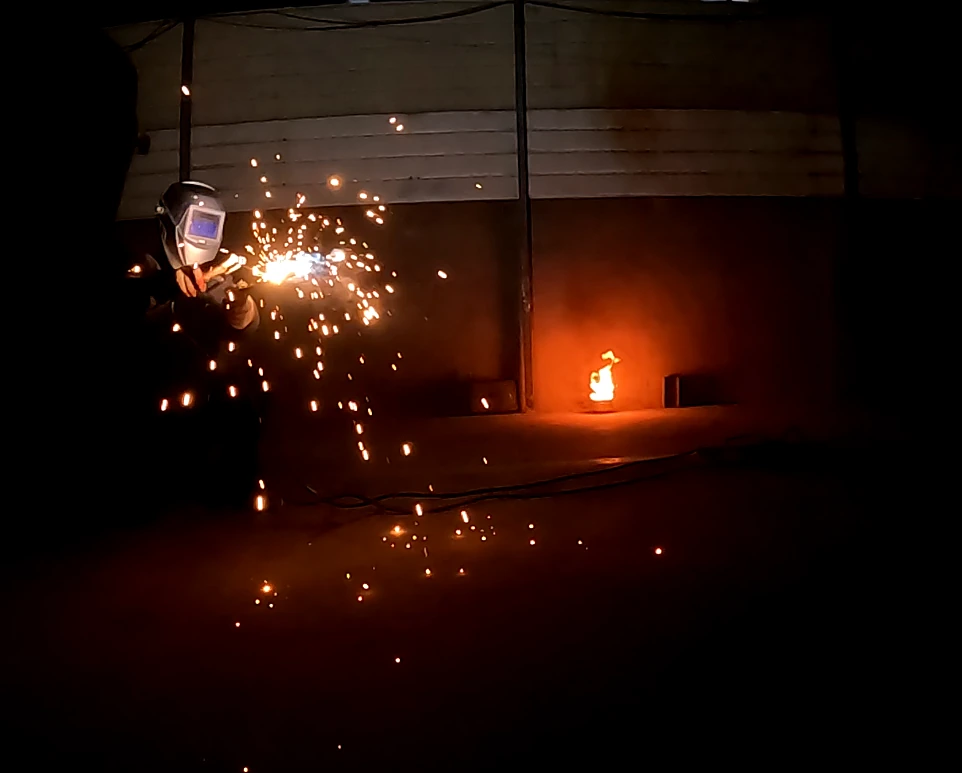

RESEARCH
Yonsei University
Ph.D. Candidate
School of Civil & Environmental Engineering
GIS Remote Sensing and Surveying Laboratory
 JoosAtlasRESEARCH · FIELD · SYSTEMS
JoosAtlasRESEARCH · FIELD · SYSTEMS
INDEPENDENT RESEARCH & DEVELOPMENT PLATFORM
JoosAtlas connects surveying, photogrammetry, computer vision and industrial operations to make spatial claims traceable, testable and explainable.

A spatial claim is not earned by looking precise. It is earned by remaining traceable from field datum to final decision.
JoosAtlas is built around a simple discipline: observation, reference and audit should not be asked to validate themselves.
SELECTED WORK
A surveyed primitive generates a design boundary; a declared camera model carries that boundary into the image; the observed response is returned to object space and audited with its sign intact.

THE PERSON BEHIND THE ATLAS
Researcher · Industrial operator · Builder
Joo Yong-Hoe is a Ph.D. Candidate in the School of Civil & Environmental Engineering at Yonsei University and a researcher in the GIS Remote Sensing and Surveying Laboratory. He is also President of Daejin Pipe Co., Ltd. and President of ACERS.
His work connects rigorous spatial measurement with real operating environments, turning research questions into auditable methods, visual explanations and deployable systems.

Ph.D. Candidate
School of Civil & Environmental Engineering
GIS Remote Sensing and Surveying Laboratory


President
Daejin Pipe Co., Ltd.

President
Alumni of Civil, Environmental Resilience Safety
Yonsei Graduate School of Engineering
Affiliations are provided for biographical context. JoosAtlas is an independent personal research platform and does not represent the official views of the affiliated organizations.
CURRENT COORDINATES
Each coordinate is labeled by maturity. Nothing is presented as finished before the evidence can support it.